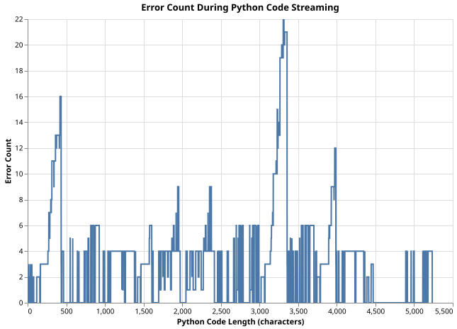

Parsing LLM Output Streams
Introduction
- .txt discusses an interesting technique for forcing valid outputs to be generated by LLMs in How fast can grammar-structured generation be?
- I don't have good enough computers to manipulate the output layer, so I'm stuck with OpenAI API compatible solutions.
- This post outlines some of my thoughts and observations while guiding Cline through development of this experiment.
- Most of this document is an afterthought. I hope to clarify this process for myself more as I go on.
Motivation
- Cline and other agentic coding models are likely to stick around, even without any significant advances in LLM performance.
Can we parse the code output of an LLM agent while it's streaming, to validate correctness closer to real time?
- Started with the Pocketflow Streaming with Interrupt example.
- Added tree-sitter-python.
- Modified
StreamNodeto feed characters into an accumulator for iterative validation. -
Incremental parsing triggers errors too early.
Found that when we trigger an interrupt whenever a parsing error is detected, certain code errors when maybe it should not.
x = 42This will error, because as it flows through the system, at some point we will only have
x =which is not valid Python. The behavior of our system is correct, but our assumptions about the problem are not.
Can we mitigate this behavior by counting errors over time?
For example, when an erroneous error like this is detected, it is likely to be resolved soon. When resolved, the error count will go back to 0. Perhaps an error threshold will work, because when errors arise, if they are erroneous they will disappear before many errors accumulate.
- Added the error accumulator.
- Still had problems after 5 errors were detected.
- Increased the threshold to 300.
- Added a feature to print the error count continuously for more observations.
- Many, many errors. Decided to change approach.
-
Added a new tool to plot AST errors as a text is incrementally parsed character by character.
Ingest and plot
plot.pyto see how AST errors accumulate and resolve over time.plot.pycontains no syntax errors, as it was used to produce its own plot.
Tree-sitter error count while plot.pyis parsed one character at a time.A cool plotting tool for demonstrating this would be to show the text side by side with the chart and present a slider. As the slider spans from 0 to the EOF, you could print the text, AST, and graph.
- The spikes in error counts are likely from multi-line text blocks.
- This is just how Tree-sitter works. We probably need to use something else that handles incremental parsing differently. Ideally, we need a system that knows the difference between a parsing error and a syntax error that occurs from out-of-language tokens.
Could lark work for incremental parsing?
- Created
small_lark.pyfor testing. - Expected tokens are listed in the exception, so we can detect errors that are end-of-input related or not.
- Not perfect:
x = 42passes. def x():\n\ta=1fails.- Added more newlines to the lark examples. They seem to work as expected now.
Results
Tree-sitter reports errors on every half-written line, so an error count over time is too noisy to stop a stream on: the plot shows spikes through every multi-line block. Lark was more promising. Its exception lists the tokens it expected next, which separates “the input just ended” from “this is wrong”, and with extra newlines in the examples it behaved as hoped. It is still a toy. The experiment is in pocket_parsing.
There's some useful potential for wrapping parsers directly around streamed outputs for better evaluation. Usually, Cline just makes a best attempt and then fails, executes the bad code, and parses the errors. This is not the direction I take as a programmer.
Documentation access is also usually ignored as a step, both by Cline and the model itself (even when documentation is explicitly provided).